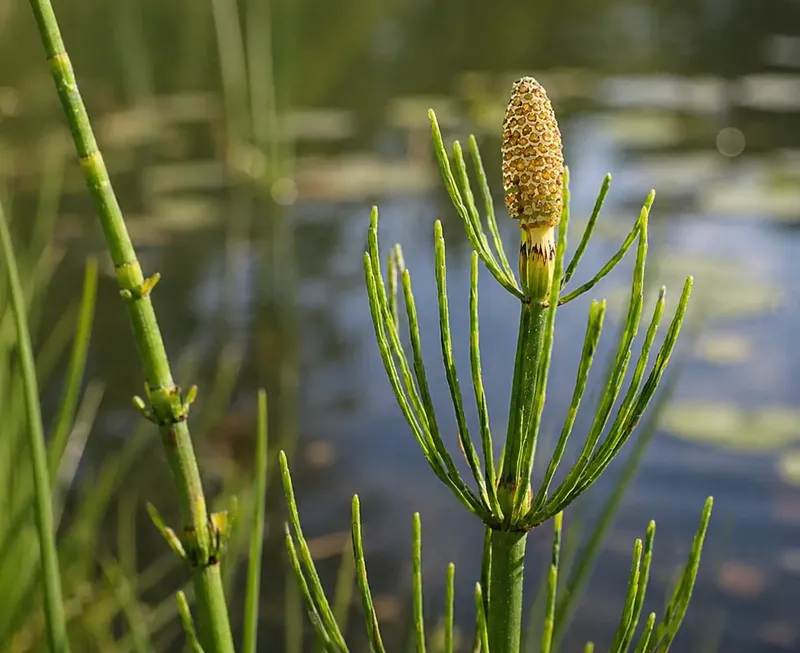

Растения для пруда
Хвощ болотный
Цена и наличие
- P912 BYN / шт.В наличии
Данные на 23.11.2026.
Характеристики
- Преимущества
- Фильтрация воды, предотвращение роста водорослей, неприхотливость и устойчивость
- Период цветения
- Апрель-май
- Размер колосков
- 2-4 см
- Размер корневища
- До 1 м и более
Описание
Хвощ болотный для пруда – это идеальное растение, которое не только придает водоему естественную красоту, но и выполняет множество полезных функций.
Хвощ болотный для пруда – это идеальное растение, которое не только придает водоему естественную красоту, но и выполняет множество полезных функций. Его длинные, стройные стебли создают уникальный визуальный эффект, добавляя пруду изысканности и природного очарования. Хвощ болотный является отличным выбором для тех, кто стремится создать гармоничную и экологически чистую среду в своем водоеме. Одним из главных преимуществ хвоща болотного является его способность поддерживать чистоту воды. Это растение эффективно фильтрует органические вещества, предотвращая их разложение и, как следствие, рост водорослей. Благодаря этому вода в пруду остается прозрачной и чистой, что способствует здоровью всех водных обитателей. Хвощ болотный также играет важную роль в создании благоприятных условий для жизни и размножения водных животных. Его густые стебли служат отличным укрытием для рыб и других обитателей пруда, защищая их от хищников и создавая комфортные условия для нереста. Это растение способствует поддержанию биологического равновесия в водоеме, что особенно важно для поддержания здоровой экосистемы. Еще одним значительным преимуществом хвоща болотного является его неприхотливость и устойчивость к различным условиям. Это растение легко приживается в любом пруду и не требует особого ухода. Оно способно расти как на мелководье, так и на более глубоких участках водоема, что делает его универсальным выбором для любого типа пруда. Хвощ болотный устойчив к колебаниям температуры и уровня воды, что позволяет ему сохранять свою декоративность и функциональность в течение всего года. Кроме того, хвощ болотный обладает высокой декоративной ценностью. Его изящные стебли создают эффектные вертикальные акценты, которые прекрасно сочетаются с другими водными растениями и элементами ландшафтного дизайна. Это растение может использоваться как в одиночных посадках, так и в композициях, добавляя пруду разнообразие и глубину.